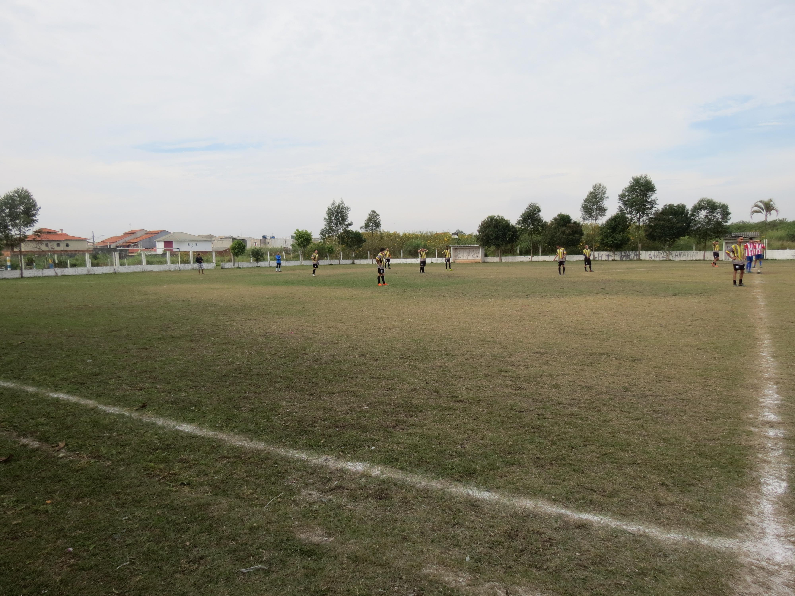
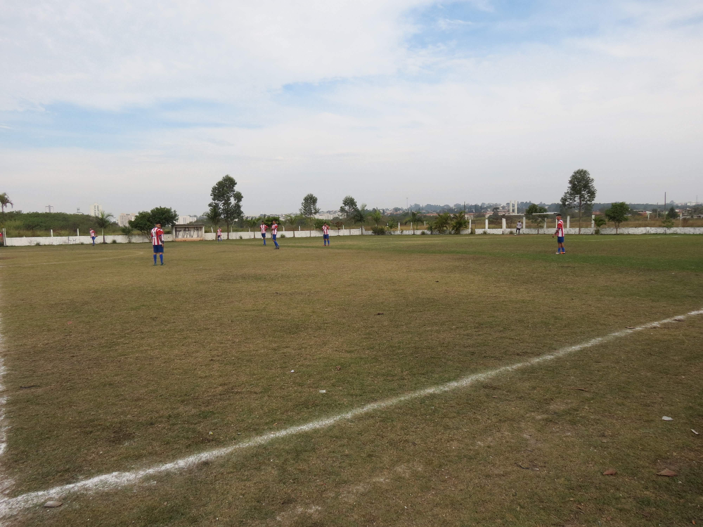

Suzanópolis Futebol Clube
Categoria: Veterâno
R. Alice Palermo Santos, 11 - Jardim Suzanopolis, Suzano - SP, 08670-290
Fotos do Campo


Redes Sociais
Siga nossas redes sociais para ficar por dentro das novidades e atualizações do Suzanópolis Futebol Clube!
Facebook | Instagram | Twitter